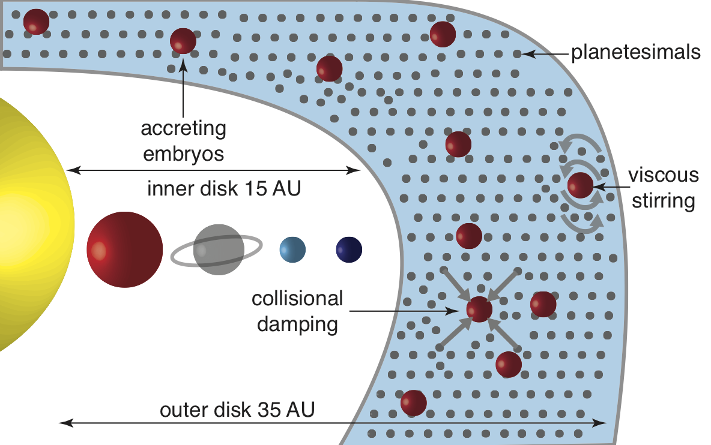
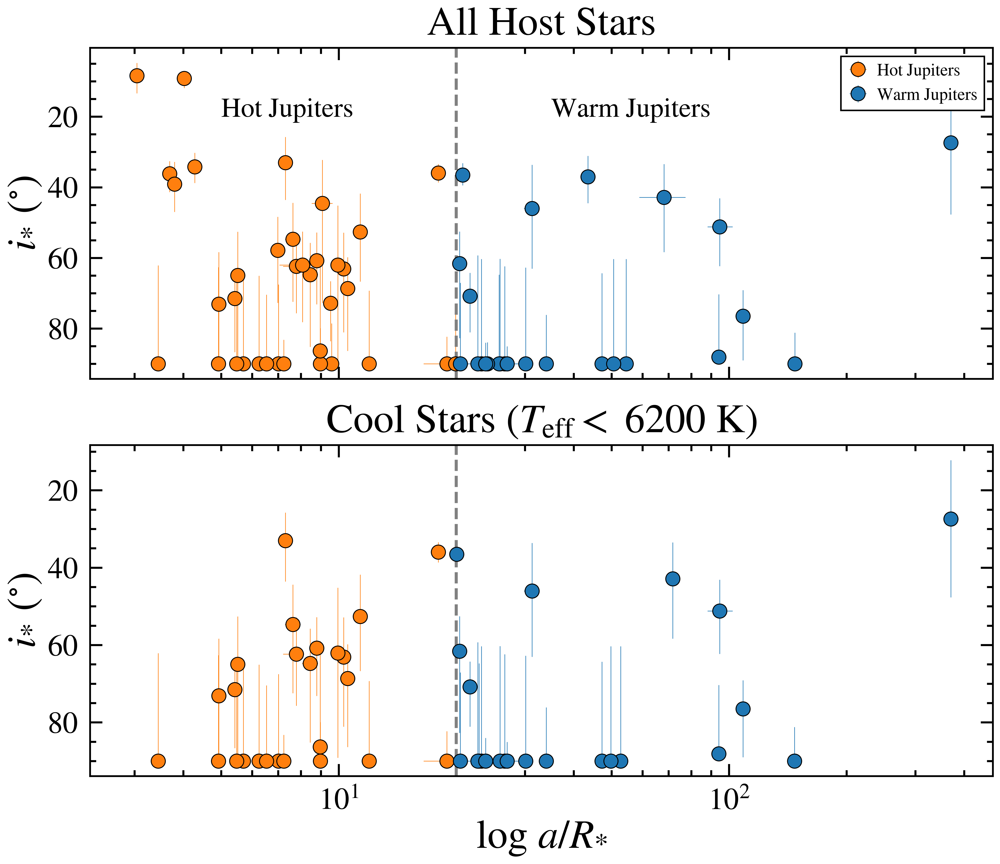

Marvin K. Morgan II
I'm a Astronomer
About
Welcome to my academic webpage. My name is Marvin Morgan and I am a fifth year graduate student at the University of California, Santa Barbara pursuing a Ph.D. in Physics and Astrophysics. I work with Professor Brendan P. Bowler on using historical records of extrasolar planetary system architectures and orbits to understand how giant extrasolar planets form and evolve from both theoretical models and observational data. I utilize ground and space based observatories, such as the James Webb Space Telescope, Transiting Exoplanet Survey Satellite, Kepler space telescope, W. M. Keck Observatory in Hawaii, Hobby-Eberly Telescope in West Texas, and MINERVA-Australis in Australia to establish the relative importance of giant planet migration channels.
Prior to attending UCSB, I graduated with Distinction in Physics, a Bachelors of Arts in Physics & Astrophysics, and a Master of Science in Physics & Astronomy from the University of Pennsylvania. While at Penn, I worked with Professor Robyn Sanderson, Professor Konstantin Batygin (Caltech), and Professor Darryl Seligman (Michigan State University) on the dynamics and evoltuion of the giant planets in the early solar system. I then obtained a Master of Science in Astronomy & Astrophysics at the University of Texas at Austin working with Professor Bowler.
When I'm not solving fundamental problems in exoplanet astronomy, I enjoy working out and cooking. I was captain of the Men's Varsity Track and Field team at Penn where I was a two-ime Ivy League Champion and School record holder in the 60m Dash and a member of the Men's Varsity Track and Field team at Texas.
First Author Publications
17 Total Citations, Google Scholar h-index of 6
Significant Contribution Publications
113 Total Citations, Peer-Reviewed Papers
Students Mentored
Undergraduates
Hours of Teaching & Outreach
Lectures, Labs, Public Talks
Education
2017, The University of Pennsylvania
B.A., Physics with a Concentration in Astrophysics
M.S., Physics & Astronomy
2026, University of California, Santa Barbara
Candidate for Ph.D., Physics & Astronomy
Thesis: Testing the Origin of Giant Planets with Population-Level Eccentricities and Obliquities
Advisor: Dr. Brendan P. Bowler
2023, The University of Texas at Austin
M.A., Astronomy
Thesis: Signs of Similar Stellar Obliquity Distributions for Hot and Warm Jupiters Orbiting Cool Stars
Advisor: Dr. Brendan P. Bowler
Research Highlights
Select Awards & Honors
- UT Austin College of Natural Sciences Graduate Continuing Fellowship (2025)
- UT Austin College of Natural Sciences Mentoring Dean's Strategic Fellowship (2024)
- Frank N. Edmonds, Jr. Memorial McDonald Observatory Fellowship Award Recipient (2023-2024)
- McDonald Observatory Teten Excellence Fellowship Recipient (2021- 2023)
- Prestigious Roy and Diana Vagelos Science Challenge Award (2020-2021)
Select PI Observing Programs
- JWST/MIRI, 16.1 hours (2025)
- HET/HPF, 82 hours (2022A - 2023A)
- MINERVA-Australis, 225 hours (2022A - 2023A)
Research Interests
Early Solar System Evolution
{kind=link}
The large-scale structure of the solar system has been shaped by a transient dynamical instability that may have been triggered by the interaction of the giant planets with a massive primordial disk of icy debris. We investigated the conditions under which this primordial disk could have coalesced into planets using analytic and numerical calculations. Our results favor a scenario wherein the dynamical instability of the outer solar system began immediately upon the dissipation of the gaseous nebula to avoid the overproduction of Earth-mass planets in the outer solar system.
Morgan, M., Seligman, D., and Batygin, K., 2021, ApJL, 917, L8.
Host Star Obliquities
{kind=link}
Transiting giant planets provide a natural opportunity to examine stellar obliquities (spin-orbit orientations), which offer clues about the origin and dynamical histories of close-in planets. Hot Jupiters orbiting Sun-like stars show a tendency for obliquity alignment, suggesting that obliquities are rarely excited or that tidal realignment is common. However, the obliquity distribution is less clear for giant planets at wider separations where realignment mechanisms are not expected to operate.
Morgan, M., Bowler, B. P., Tran, Q. H., Petigura, E., Nagpal, V., and Blunt, S., 2024, AJ, 167, 48.
Media
Articles and videos featuring my academic and athletic work.
Services
Educator
Having worked with hundreds of students in physics and astronomy courses, I am passionate about building welcoming, productive spaces where students can thrive.
Mentor
Committed to mentorship, I have supported students from varied academic backgrounds as they move on to advanced degrees and professional roles in tech, finance, and academia.
Consultant
As a former Division I varsity track & field team captain and record holder at the University of Pennsylvania and UT Austin, I bring first-hand experience balancing elite athletics, rigorous academics, and high-level research — helping clients with performance and evidence-based decision-making.
Testimonials
Student Reviews for Astronomy 307: Introduction to Astronomy for Majors
Contact
For any questions or inquiries, feel free to contact me.
Address
UC Santa Barbara Santa Barbara, CA 93106
Email Me
marvinmorgan@ucsb.edu